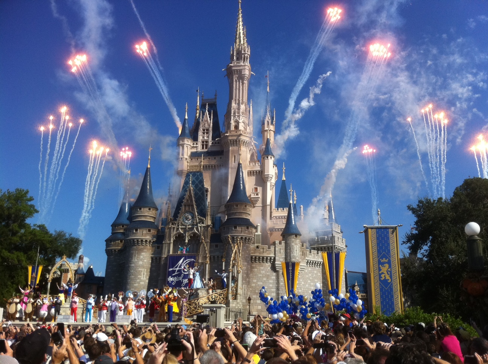
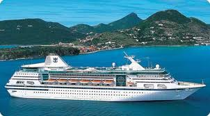
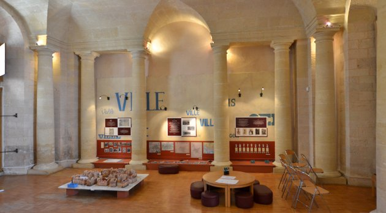

Here are some popular trip packages to get you started!
Orlando, Florida
4-Day Itenerary
Day 1:
-Arrive in Orlando, FL at 11:30am
-Check-in to Wyndham Lake BuenaVista Resort
-Enter Disney World Park
Day 2:
-Eat breakfast at the hotel
-Enter Disney World Park
-Eat lunch in Downtown Disney
Day 3:
-Spend the day at Typhoon Lagoon water park
-Eat dinner at Sci-Fi Dine in Theater
Day 4:
-Have breakfast at the hotel
-Depart Orlando at 11:00am
-Return Home
Caribbean Cruise
8-Day Itenerary
Day 1:
-Embark on the Vision of the Seas
-Depart from Colon, Panama in the evening
Day 2:
-Dock in Cartagena, Columbia for the day
-Cruising again by 9:30pm
Day 3:
-Spend all day cruising
Day 4:
-Dock in Kralendijk, Bonaire
Day 5:
-Dock in Orangjestad, Aruba
Day 6:
-Dock in Willemstad, Curacao
Day 7:
-Cruise all day on your way back to Panama
Day 8:
-Arrive back in Colon, Panama
-Visit the Panama Canal
European Museum Tour
12-Day Itenerary
Day 1:
-Arrive in London, UK at 8:30pm
-Check-in to the Arrive Hotel
-Find dinner in the city
Day 2:
-Visit The Imperial War Museum
-Explore the area for dinner
Day 3:
-Visit The London Eye
-Stop by Big Ben
-Have lunch at Abbeville Kitchen
Day 4:
-Take the Dutch Flyer ferry and train to Amsterdam, NL
-Checkin to Rembrandtplein Hotel
Day 5:
-Visit The Anne Frank House
-Enjoy lunch at the museum cafe
Day 6:
-Tour the Amsterdam Tulip Museum
-Eat dinner at De Prins
Day 7:
-Travel to Paris via the Thalys train
-Check-in to the Grand Hôtel Lévêque
Day 8:
-Visit The Preau des Accoules
-Have dessert at Le Glacier du Roi
Day 9:
-Visit the Eiffel Tower
-Take the Seine River Cruise
Day 10:
-Use Rail Europe to travel to Vienna, Austria
-Check-in to the Gal Apartments of Vienna
-Explore downtown Vienna
Day 11:
-Visit The Museum of Art History all day
Day 12:
-Depart Vienna